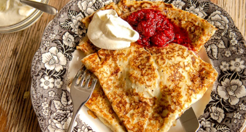
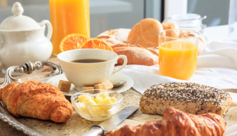
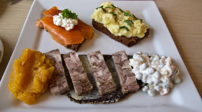
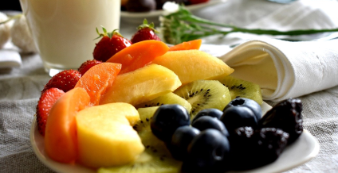

EGITTO
INDIA
Foul Madamas è il piatto
della colazione egiziana
ed è composto da fave,
ceci, aglio e limone,
condito con olio di oliva,
peperoncino, salsa tahini,
un uovo bollito e verdura
Colazione di gusto
diametralmente opposto al
nostro.Patate arrosto al
rosmarino, tofu, lenticchie,
salsiccia vegetariana e
peperoncino banana
abbrustolito


SVEZIA
FRANCIA
Tipico pancake chiamato
Pannkakor, molto sottile in
quanto non contiene lievito,
accompagnato da
marmellate di diverso tipo
e si mangia anche con la
panna
Petit déjeuner :
con una bevanda (caffè, tè,
cioccolata calda o succo di
frutta) accompagnata da
pane e burro, croissant o
brioche alla confettura di
vario tipo


HAWAII
ISLANDA
Frutta fresca per la colazione
hawaiana, d'altra parte l'isola
ne offre in gran quantità in
ogni periodo dell'anno.
Possono arricchire la
colazione anche un paio di
bagel
Aringhe affumicate e in
agrodolce, salumi alle erbe
e vari formaggi,
pomodorini, cetrioli
conditi, e pagnotte al
sesamo imburrate – e poi
marmellata e yogurt

